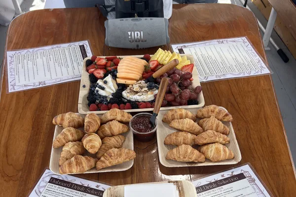

21+ Only
Bottomless Mimosas & Croissant Brunch
Set sail with an unlimited open bar and fresh-baked croissants from The Ugly Duckling. Every drink is included — wine, bubbly, rosé, beer, hard seltzer. The perfect daytime send-off.
- Unlimited open bar — wine, bubbly, rosé, beer & hard seltzer
- Fresh-baked croissants from The Ugly Duckling
- Private charter — up to 16 guests (21+)
- 2-hour cruise of Casco Bay
- Optional catering from Chaval available
From $170 / person — open bar included
Book This Charter